Est. 2018 · Christchurch, NZ
Golf, good company, and a bit of craic.
A social golf society bringing together the Irish community (and friends) in beautiful Ōtautahi Christchurch, New Zealand.
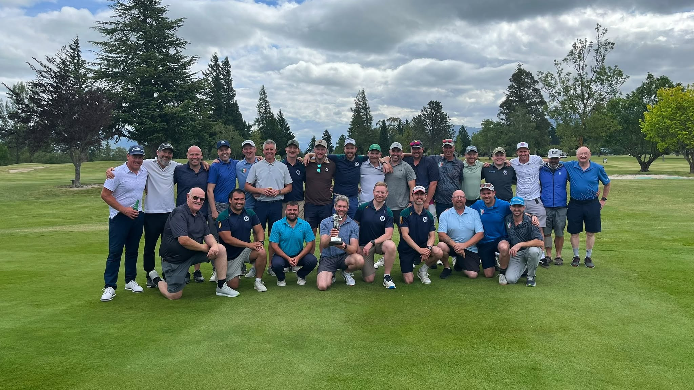
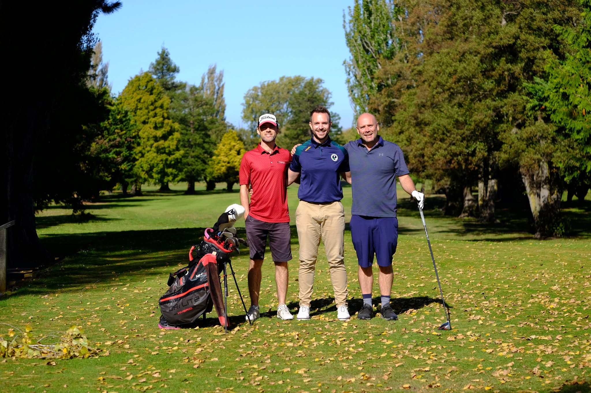
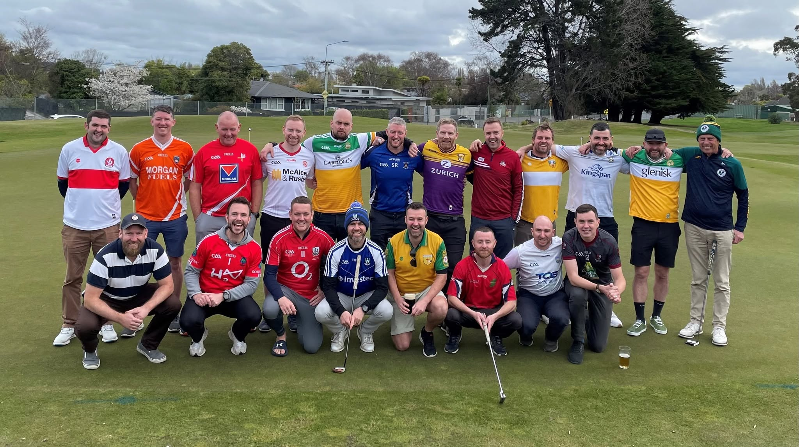
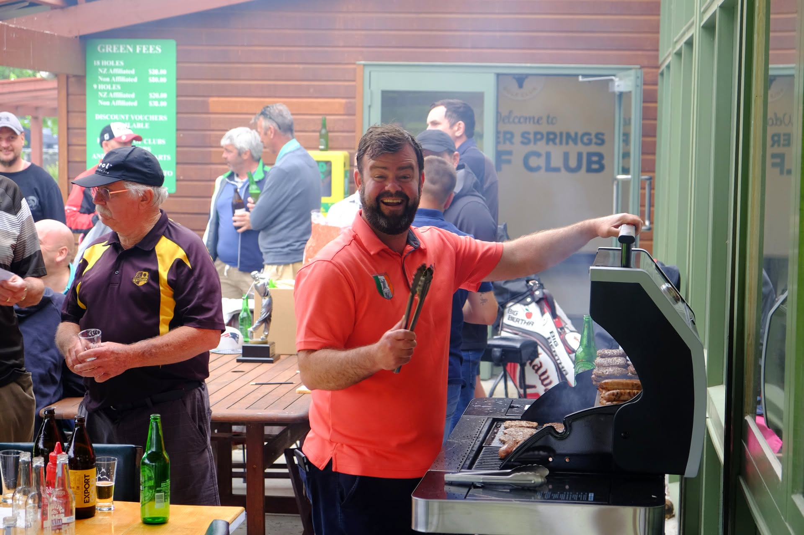
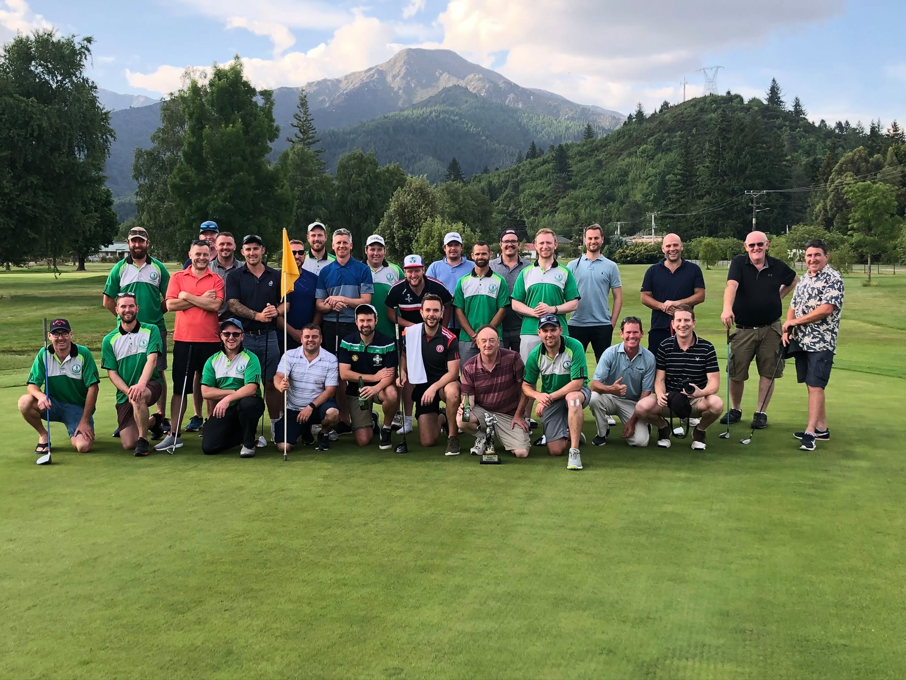
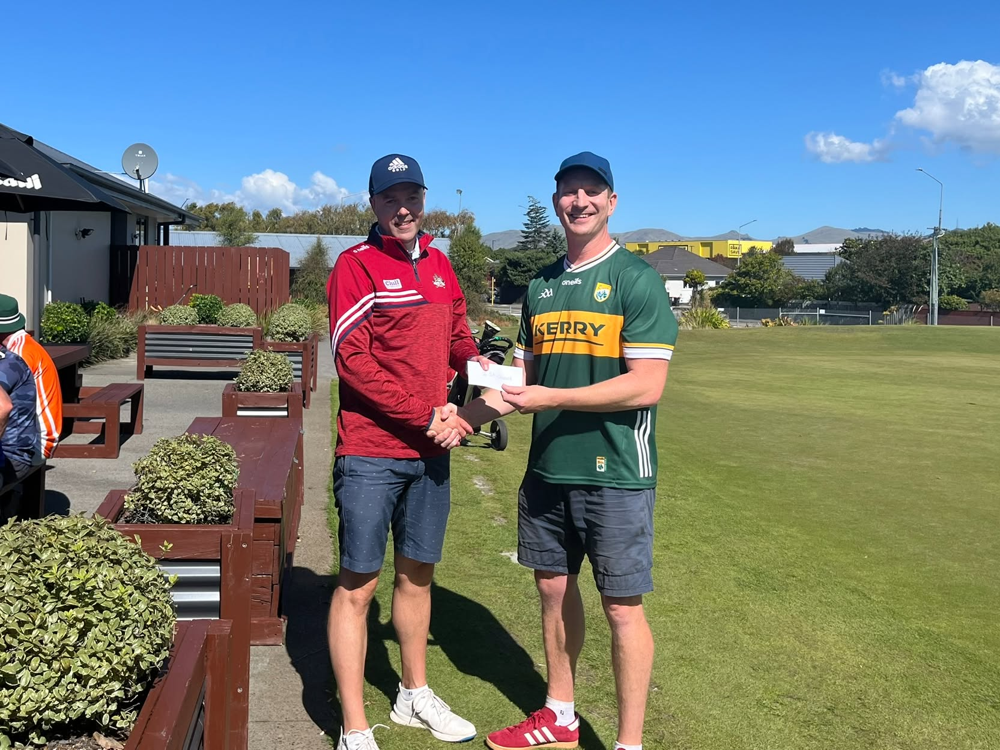
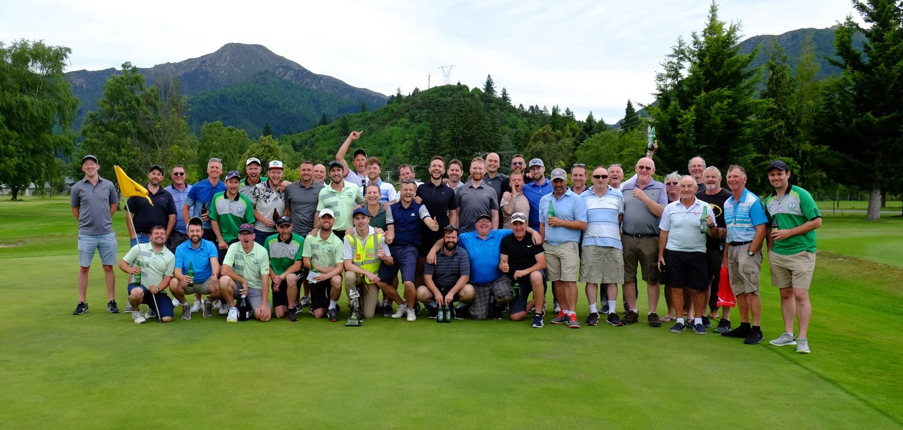
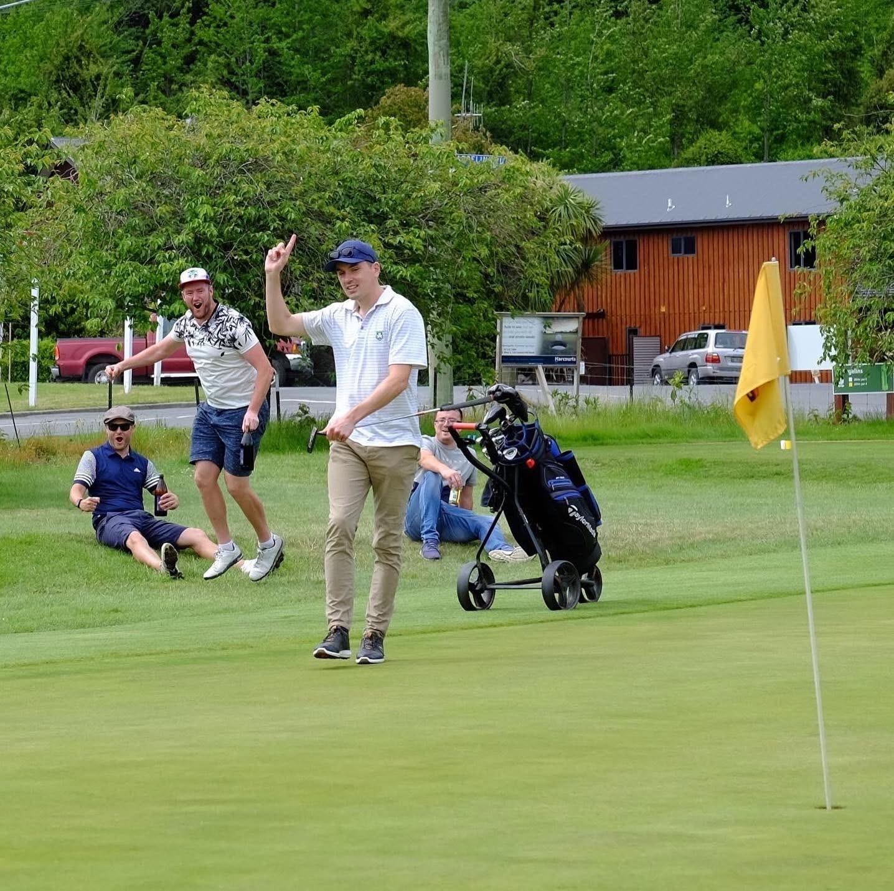
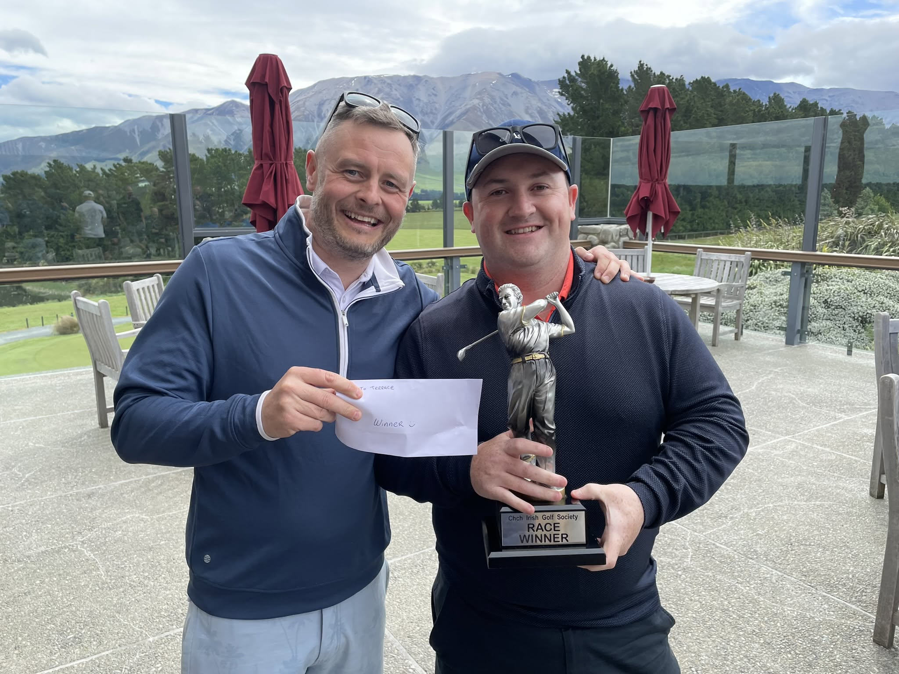

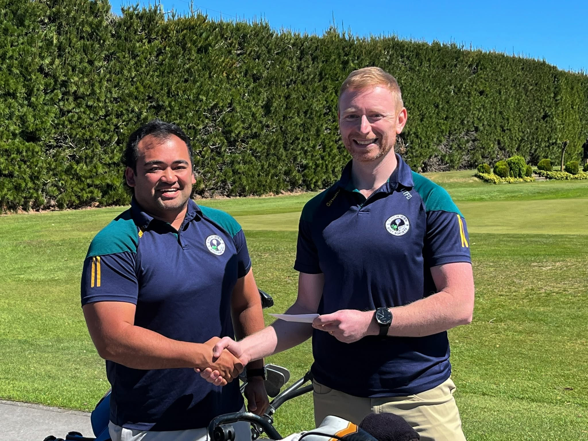
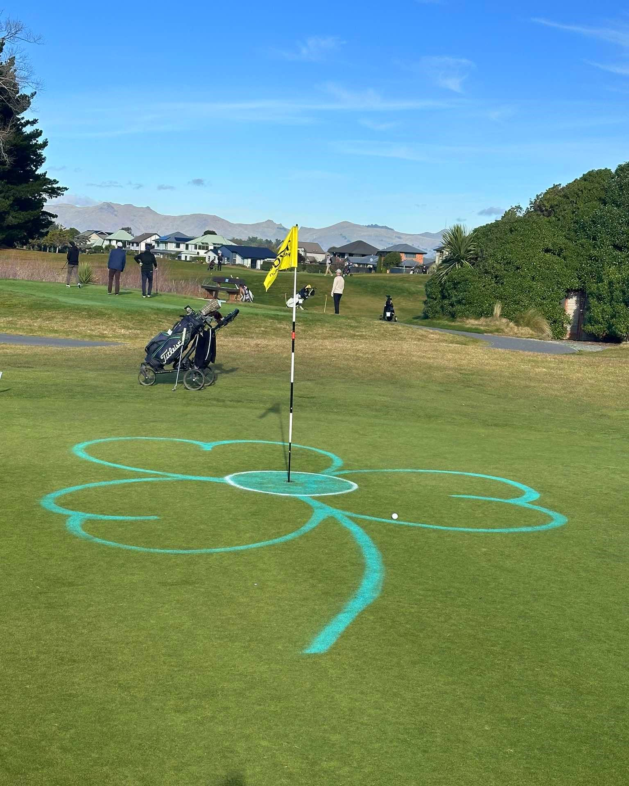
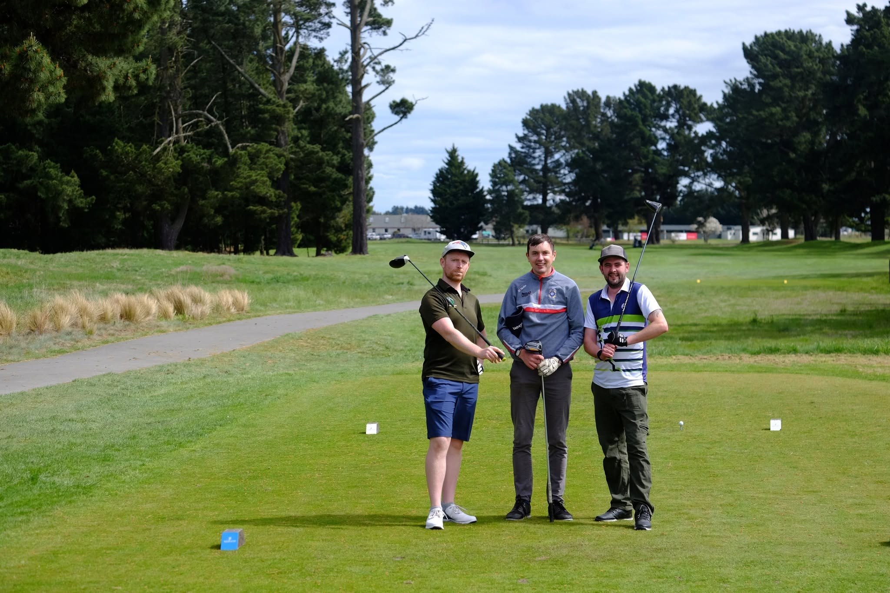
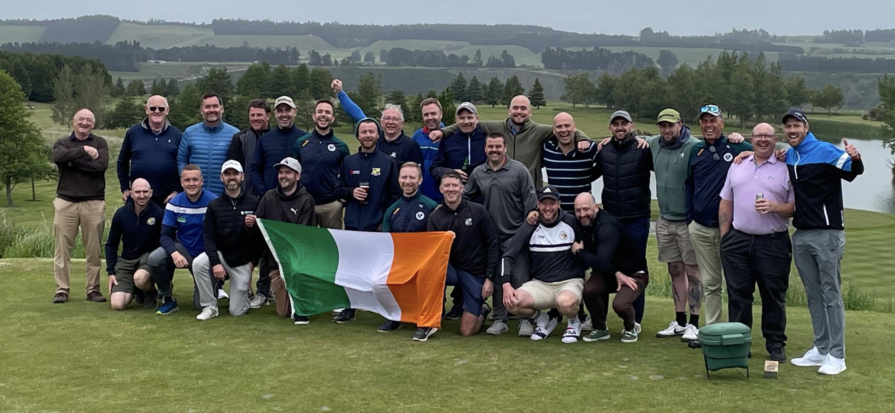
Who we are
A round a month, and everyone's welcome
The Christchurch Irish Golf Society was created in 2018 to help nurture friendships among the local Irish community. However, like an Irish pub, we welcome all comers, and our group includes many ex-pats from the UK, as well as several Kiwis.
We host events at different golf courses around Christchurch every month. Each event is a relaxed occasion, where the focus is a long walk and good chats, interspersed with the odd golf shot. That said, we do run a few competitions to scratch the competitive itch: a stableford at each monthly outing, with spot prizes for closest to the pin and longest drive; an annual match play competition run across several events; and our flagship competition, the Race, where players accumulate a combined stableford score from their best six events during the year, culminating in a final event somewhere outside Christchurch to decide the winner, and a night away.
The society is run by a small organising committee of volunteers, led by Danny Fitzgerald (Captain) and William Walsh (Treasurer).
Get involved
Joining is easy
New players and visitors are always welcome. No handicap or club membership is needed to join in. Check out our events page here on the website, or our events on Facebook to see what is coming up. To enter, drop us a message on Instagram or Facebook, or send us an email.